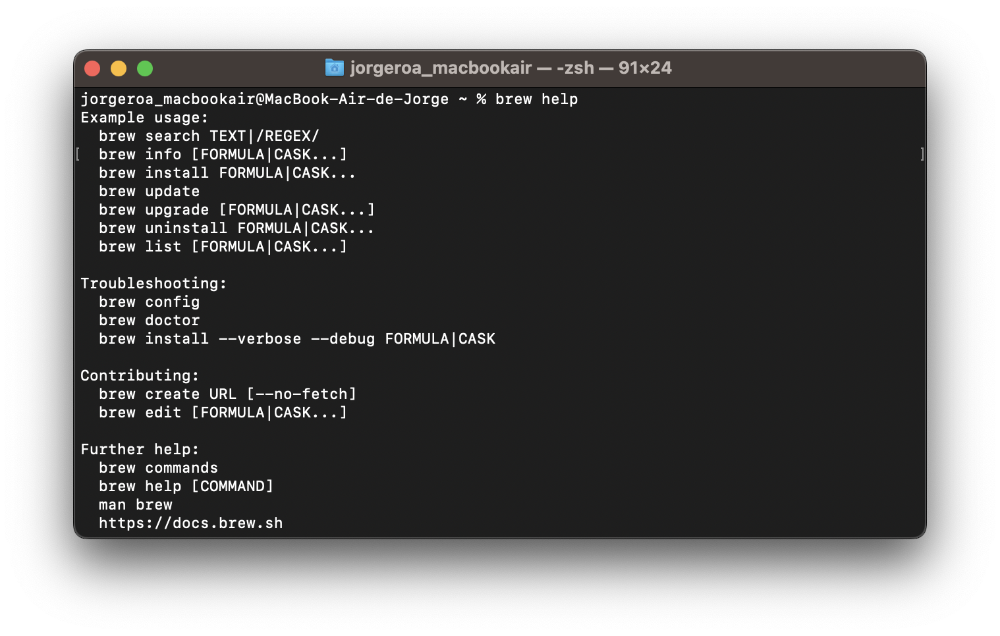
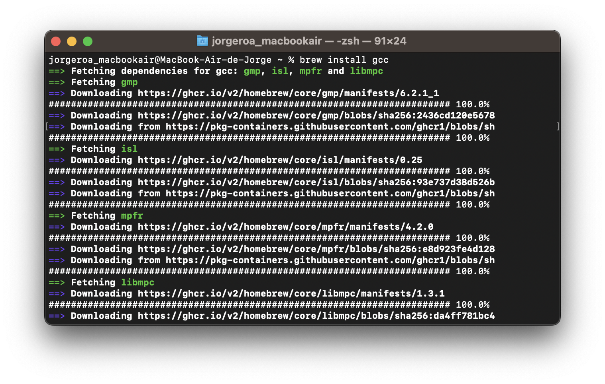

/bin/bash -c "$(curl -fsSL
https://raw.githubusercontent.com/Homebrew/install/HEAD/install.sh)"
This document shows you how we can enable the use of multiple cores on Macs with Intel/Apple silicon chips (M1 and M2).
If we load data.table library in studio, this message will appear in your console:

As you can see, OpenMP support is needed to use multiple cores in Macs. Therefore, we must install those packages through the terminal and set the required paths to run OpenMP.
Prerequisites
Have the latest version of studio.
Have the latest version of Mac Ventura
First Step
- Open your terminal. It should see like this:

Second Step (Install homebrew)

is an open-source software package management system that makes installing applications on Linux and Apple’s macOS operating systems easier. Homebrew will help us install OpenMP. Open Multi-Processing allows us to run applications in parallel to efficient processes. In this case, we want to employ the multiple cores that Mac has for data.table wrangling.
As the Homebrew page states, Homebrew installs the stuff you need that Apple (or your Linux system) didn’t. So, once we open our terminal, we need to paste this command on our terminal.
To install homebrew, you need to enter your password and press ENTER. After installing homebrew, you should see in your terminal this screen:

Third Step (Check package and change paths)
We need to be sure that homebrew was installed in the correct path. For this, we can type in the terminal:
brew helpWe need to set our paths properly if the command is not recognized.
|
|
|
|---|---|
export PATH=/opt/homebrew/bin:$PATH |
export PATH=/usr/local/opt/homebrew/bin:$PATH |
With these changes, we can rerun homebrew help, and this information should appear in our terminal.

Fourth Step: Installing required packages (libopenmp, libopenmpt, llvm, cask, ggc)
Install llvm
We need to install the llvm package to access the clang compiler, which helps us to set multithreading.
brew install llvm

Once the installation is finished, we should see this screen in the terminal.

Install libopenmp
brew install libopenmpThis is the screen that you should see once the installation is done.

Install libopenmpt
brew install libopenmptThis is the screen that you should see once the installation is done.
 :::
:::
Install gcc
brew install gccThis is the screen that you should see once the installation is done.

Install –cask openmtp
brew install --cask openmtpThis is the screen that you should see once the installation is done.
 }
}
Fifth Step: create .R folder and Makevars file.
We need to create a text file called Makevars. This file is necessary because we need to set a file with multiple paths where we will retrieve the various packages we have installed in our R environment. We need to open a new script or open our terminal to execute the next commands:
dir.create('~/.R')
file.create('~/.R/Makevars')dir.create creates a hidden folder in our environment, and file.create creates a text file in the folder we just created. This folder is located in our usrs folder. You can access your user folder and your hidden folders with the next shortcuts:
| Open Finder | Shortcuts |
|---|---|
| Go to your home folder: | CMD + Shift + H |
| Show your hidden folders: | CMD + Shift + . |
You should have this path (according to your chip).

Sixth Step: Create our paths in our Makevars file.
We need to open our Makevars file with TextEdit, and we must paste the following paths according to our chip (Apple Silicon or Intel)
Apple Silicon
HOMEBREW_LOC=/opt/homebrew
LLVM_LOC=$(HOMEBREW_LOC)/opt/llvm
CC=$(LLVM_LOC)/bin/clang -fopenmp
CXX=$(LLVM_LOC)/bin/clang++ -fopenmp
CFLAGS=-g -O3 -Wall -pedantic -std=gnu99 -mtune=native -pipe
CXXFLAGS=-g -O3 -Wall -pedantic -std=c++11 -mtune=native -pipe
LDFLAGS=-L$(HOMEBREW_LOC)/opt/gettext/lib -L$(LLVM_LOC)/lib -Wl,-rpath,$(LLVM_LOC)/lib
CPPFLAGS=-I$(HOMEBREW_LOC)/opt/gettext/include -I$(LLVM_LOC)/include
Intel
HOMEBREW_LOC=/usr/local
LLVM_LOC=$(HOMEBREW_LOC)/opt/llvm
CC=$(LLVM_LOC)/bin/clang -fopenmp
CXX=$(LLVM_LOC)/bin/clang++ -fopenmp
CFLAGS=-g -O3 -Wall -pedantic -std=gnu99 -mtune=native -pipe
CXXFLAGS=-g -O3 -Wall -pedantic -std=c++11 -mtune=native -pipe
LDFLAGS=-L$(HOMEBREW_LOC)/opt/gettext/lib -L$(LLVM_LOC)/lib -Wl,-rpath,$(LLVM_LOC)/lib
CPPFLAGS=-I$(HOMEBREW_LOC)/opt/gettext/include -I$(LLVM_LOC)/include
Once you put the paths, save the text file and close it. The difference between Apple Silicon and Intel is just the path; everything else remains similar. For Apple Silicon, the path is /opt/homebrew and for Intel is /usr/local.
Seventh Step: Reinstall data.table and set your cores.
Finally, we need to remove data.table and reinstall it via source.
remove.packages("data.table")
install.packages('data.table', type='source')If everything was done correctly, you should load the package with library(data.table) and see the following message.

Remember that you can set more threads with setDTthreads (according to the specifications of your computer). Happy coding!